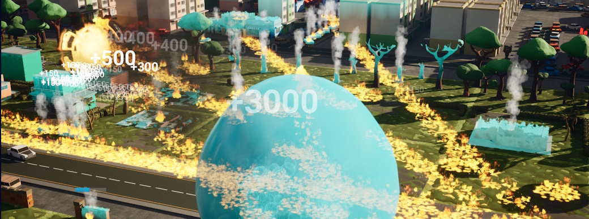

Goozilla
Introduction
Goozilla was a four-week project developed by a team of eight, including four programmers, using Unreal Engine with a combination of Blueprints and C++. This fast-paced roguelike embraces chaos, letting players rampage through a city as an ever-expanding, all-consuming blob of slime. The objective? Devour buildings, vehicles, and anything in sight to grow in size and unlock new abilities. But destruction doesn’t come without resistance—players must fend off military forces desperate to contain the rampaging menace. Designed for instant pick-up-and-play action, Goozilla blends destruction, strategy, and rapid evolution into an endlessly replayable experience.
Contributions
During the four-week development period, I served as a Systems and UI Programmer, focusing on scalable gameplay mechanics and seamless UI integration. My primary responsibilities revolved around the ability upgrade system and a modular health component, both of which needed to be highly adaptable to support the game's evolving chaos and destruction mechanics. Additionally, I worked closely with multiple team members to integrate various systems, ensuring a smooth and cohesive gameplay experience.
Key Implementations
- Ability Upgrade System: Designed and implemented a scalable ability system that tracks unlockable abilities, their levels, upgrade states, and type classifications. This system dynamically updates both backend data and the UI, ensuring proper display, selection, and progression feedback.
- Card-Based Upgrade Selection: Developed an intuitive upgrade selection interface, allowing players to pick and upgrade abilities mid-run. This required smooth animations, clear ability descriptions, and real-time updates to the player's stats and abilities.
- Global Health Component: Created a modular health system used by nearly every in-game entity, from the player to destructible world objects. This system needed to scale dynamically, supporting different health values, damage types, and interactions as the player devoured the environment.
- System Integration & Collaboration: Worked closely with other programmers and designers to integrate various game mechanics, ensuring that UI, abilities, and gameplay elements interacted seamlessly.
These contributions not only optimized the game’s scalability and performance but also ensured a smooth, engaging player experience that reinforced the game’s core mechanics of growth, destruction, and evolution.
Challenges
Building a High-Scope, Data-Heavy System in Unreal
One of the biggest personal challenges I faced was the unexpected scope and complexity of the ability-upgrade system I was developing. Initially, I anticipated it to be a straightforward implementation, but as development progressed, I realized the system needed to track, store, and update a significantly larger set of data than I had originally planned. Managing ability states, levels, unlock conditions, UI updates, and backend tracking required a far more intricate and scalable design than I first envisioned. Unreal Engine itself introduced additional hurdles—handling large data tables within Unreal proved to be buggy and unstable, leading to occasional crashes and even lost progress. However, recognizing these issues early allowed me to implement preventative measures, such as regular backups, structured data handling, and more modular system design, reducing future risks. While the system took longer than expected to complete, it ended up being a highly adaptable, scalable, and efficient system—a challenge that ultimately strengthened my ability to manage complexity, anticipate scalability needs, and optimize workflow in Unreal Engine.
Version Control Struggles & Development Delays
Setting up version control in Unreal Engine proved more tedious and unstable than expected, causing frequent crashes and delaying development. The biggest impact was on programming, prototyping, and, most critically, merging and playtesting the game, making iteration much harder. Once stable, we had to prioritize key systems and streamline workflow to recover lost time, highlighting the need for a solid technical foundation early in development.
Reflection
Working on Goozilla was a deep dive into Unreal Engine, large-scale system design, and overcoming unexpected development hurdles. Between building a complex ability system, handling Unreal’s quirks with large data sets, and dealing with version control delays, this project pushed my ability to problem-solve, adapt, and work efficiently under pressure. Despite the challenges, seeing the systems come together in a scalable, dynamic, and well-integrated way made it one of my most rewarding projects.
Biggest Takeaways
- Scalability Matters: The ability-upgrade system taught me how designing for flexibility early on prevents major headaches later.
- Unreal Has Its Own Rules: Some engine features, like data tables, behave in very specific ways, and learning how to work around their limitations was invaluable. Understanding these quirks now will save me a lot of trouble in future projects.
- Time is a Limited Resource: The version control issues showed how delays in setup can cascade into every aspect of development, reinforcing the need for early technical stability.
Play Goozilla
Consume, grow, and destroy in Goozilla! Click below to play the chaos.